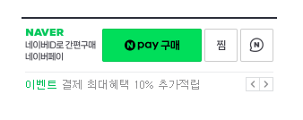

| NO | 구분 | 내용 | 참조 이미지 | 타사현황 | ||||||||||||||||
|---|---|---|---|---|---|---|---|---|---|---|---|---|---|---|---|---|---|---|---|---|
| 카페24 | 아임웹 | |||||||||||||||||||
| 1 | 비회원 전용 여부 |
- 상세 페이지의 버튼 노출 여부이며 실제 사용자의 주문내역에서는 주문 확인이 불가함. ✅ 결정사항
회원 포함 사용. 비회원, 회원 모두 버튼 노출 |
- 네이버페이 주문형은 쇼핑몰 비회원 전용 서비스 - 쇼핑몰 회원이 로그인한 경우 네이버페이 구매버튼 자체가 노출되지 않음 - 비회원 주문조회에서 네이버페이 주문번호로 조회 시 "조회하신 주문이 없습니다" 노출 |
- 쇼핑몰 회원도 네이버페이 주문형 사용 가능 - 단, 회원이 네이버페이로 구매해도 쇼핑몰 마이페이지 주문내역에는 노출되지 않음 - 구매자는 네이버페이에서 직접 주문 확인 필요 |
||||||||||||||||
| 2 | 구매평 연동 |
- 구매평 연동 기능을 제공. - 매핑 조건은 바로가기에서 확인. 구매평 매핑 바로가기 › ✅ 결정사항
1. 하루 1회(1일 1회), 전날 작성된 네이버페이 구매평을 새벽에 일괄 수집해서 쇼핑몰 상품후기에 연동 2. 일방향 연동 (양방향 아님) - 네이버페이 구매평에 쇼핑몰 관리자가 답변을 달아도, 그 답변은 네이버페이로 전송되지 않음 3. 한번 연동되면 끝 - 연동 완료된 후 네이버페이 쪽에서 구매평을 수정해도, 쇼핑몰에는 수정 전 내용 그대로 유지됨 (재연동 안 됨) 4. 적립금 미지급 - 네이버페이는 "비회원"이 네이버 계정으로 구매한 거라서, 회원 전용 적립금은 지급 안 됨 5. ON/OFF 설정 - 사용 안 함으로 변경하면 다음날부터 연동 중단 바로가기 › |
|
구매평연동 제공 | 구매평연동 제공 | |||||||||||||||
| 3 | 주문일과 결제일 불일치 처리 방식 |
- 네이버페이 결제 시점과 플렉스지에 주문이 수집되는 시점 사이에 시간 차이가 발생할 수 있어, 실제 결제일과 주문일이 다르게 찍힐 수 있음. 문제가 될 수 있는 상황 - 1월 1일 마감 할인 이벤트 적용받아야 하는데 주문일이 1월 2일로 찍혀 누락되는 경우 - 정산이나 세금계산서 날짜가 맞지 않는 경우 - 쇼핑몰 운영자가 날짜 기준으로 주문 조회할 때 헷갈리는 경우 ✅ 결정사항
수집된 시점을 주문일로 표시한다. |
수집된 시점을 주문일로 표시 | 정보 없음 | ||||||||||||||||
| 4 | 주문 상태 연동 만료(3개월) |
- 플렉스지에 주문이 수집된 경우, 3개월 경과 시 해당 주문의 상태 연동 중단 처리. - 3개월이 지나면 그 주문의 상태값은 더 이상 네이버페이와 동기화되지 않음. 문제가 될 수 있는 상황 - 운영자가 플렉스지 관리자만 보면 "정상 배송완료"로 보이는데, 실제로는 네이버페이센터에서 취소/반품이 진행 중일 수 있음. ✅ 결정사항
별도 안내 없이 처리. 플렉스지 가이드에 "주문 연동 후 3개월이 경과된 주문 건은 주문 상태가 연동되지 않습니다."라는 안내만 추가 |
별도 안내 없음 | 별도 안내 없음 | ||||||||||||||||
| 5 | 재고 차감 시점 정의 |
- 재고 차감 시점에 대한 정의 필요. 1안. 주문 등록 시 차감 2안. 결제 완료/수집 시 차감 (다만, 주문을 주기적으로 수집하는 구조이므로 결제 완료 시점과 수집 시점 사이에 약간의 시간차 발생함) ✅ 결정사항
수집 시점에 차감 |
- | - | ||||||||||||||||
| 6 | 교환 처리 범위/방식 |
- 교환 처리 범위 및 처리 방식에 대한 개발 검토 및 적용 범위 확정 필요. - 카페24의 경우 교환은 네이버페이에서 처리 가능, 아임웹의 경우 자사(쇼핑몰 관리자)에서 처리 가능. |
|
네이버페이센터 중심 - 고객이 네이버페이에서 "교환 신청"을 하면 → 네이버페이센터에서만 확인 가능 - 처리 위치 : 네이버 화면 - 운영자 편의 : 두 곳 확인 필요 - 교환 범위 : 네이버 정책 그대로 - 처리 방식 : - |
자체 관리자에서 처리 - 고객이 교환 신청을 하면 → 네이버페이에서 1차로 접수되고 → 플렉스지 자사 관리자(교환관리 화면)에도 "교환 신청" 상태로 연동되어 표시됨 - 처리 위치 : 우리 쇼핑몰 화면 - 운영자 편의 : 한 곳에서 처리 - 교환 범위 : 동일 상품/옵션만 가능 - 처리 방식 : 반품 승인 → 동일 상품 자동 추가 → 재발송 |
|||||||||||||||
| 7 | 종합형 연동 지원 여부 |
- 종합형 연동의 경우, 고객사가 네이버페이 측에 별도로 신청 및 심사를 거쳐 진행하는 구조임 (작년 개발팀에서 네이버페이에 확인 완료). - 플렉스지에서 종합형 연동을 지원할지 여부에 대한 결정 필요. |
- | - | ||||||||||||||||
| 8 | 버튼 스타일 | 모바일·PC 노출 버튼 스타일 지정 필요. 최신 이미지 기준 찜하기·네이버톡 노출 여부 결정 필요 |  |
- | - | |||||||||||||||
| 9 | 버튼 노출 위치 |
[AS-IS] 결제형 버튼이 상품 상세에 노출되고 있음. [TO-BE] 주문형 버튼은 상품 상세에, 결제형은 주문/결제 페이지의 결제 수단으로 존재해야 함. 현재 노출 방식을 올바른 구조로 조정하는 방안 결정 필요. |
각 유형별 버튼 위치 정리
|
- | - | |||||||||||||||
| 10 | 취소/반품 처리 |
[결제형] 플렉스지 관리자 시스템에서 직접 취소 및 반품 처리. 고객 요청 시 플렉스지 관리자에서 환불 처리. [주문형] 네이버페이센터에서 처리하거나, 연동 API를 통해 자동으로 처리 가능. 네이버페이센터의 주문 관리 메뉴에서 취소/반품 신청 처리. 주문형 거래에 대해 플렉스지 관리자 시스템 내에서도 취소·반품 처리가 가능하도록 기능을 구현할지 여부 미결정 상태. 네이버페이 연동 API 범위 및 처리 주체(플렉스지 vs 네이버페이센터)에 대한 개발 구현 범위 확정 필요. |
- | - | ||||||||||||||||
| 11 | 네이버 주문번호 표기 |
[주문형] 네이버페이센터 연동 또는 취소/반품 처리가 있을 수 있어 네이버 주문번호 표기 필요. [결제형] 해당 없음 (표기 X) |
- | - | ||||||||||||||||
| 12 | 교환관리 |
- 교환관리 내 교환중/교환완료의 경우 상태값 변경 시 알럿으로 처리. 알럿 문구 : [네이버페이 주문형 교환은 네이버페이센터에서만 처리 가능합니다.] - 부분 취소 가능한지 확인 필요. |
- | - | ||||||||||||||||
| 13 | 주문상태 변경 |
[주문형] 네이버페이 주문형 주문건의 주문상태를 아래 상태로 변경 시 알럿으로 처리하고 변경 불가. - 수락대기로 상태 변경 시 → "네이버페이 주문형은 수락대기 상태로 변경할 수 없습니다." - 부분배송중으로 상태 변경 시 → "네이버페이 주문형은 부분배송중 상태로 변경할 수 없습니다." - 배송예약으로 상태 변경 시 → "네이버페이 주문형은 배송예약 상태로 변경할 수 없습니다." - 교환관리로 상태 변경 시 → "네이버페이 주문형은 교환관리 상태로 변경할 수 없습니다." |
- | - | ||||||||||||||||
| 14 | 인증키 입력 방식 |
- 자동입력(아임웹) vs 수동입력(카페24) 방식 중 자동입력 가능 여부 협의 필요. - [AS-IS] 네이버 결제형은 수동 입력 방식으로 개발된 상태. |
수동입력 | 자동입력 | ||||||||||||||||
| 15 | 주문 수집 주기 | - 플렉스지의 네이버페이 주문형 주문 수집 주기 정의 확인 필요. | 2분마다 최근 10분 이내의 주문을 수집 | 공개된 자료 없음 | ||||||||||||||||
| 16 | 주문 알림 |
- 네이버페이 주문형 주문 발생 시 플렉스지에서 별도 주문 알림 제공 안 함. - 알림이 필요한 경우, 고객사가 네이버페이 고객센터에 직접 신청하여 SMS 알림을 수신하는 방식으로 안내할지 결정 필요. |
- | - | ||||||||||||||||
| 17 | 중간 상태값 연동 |
- 네이버페이 주문형의 취소/반품/교환 중간 상태값을 네이버페이센터에서만 확인하고, 플렉스지에는 최종 상태값만 연동하는 구조로 적용할지 결정 필요. [취소 중간 상태값] 취소요청 / 취소중(취소 승인완료) / 취소승인지연 / 자동환불대기 [반품 중간 상태값] 반품요청 / 반품 수거중 / 반품 수거완료 / 반품승인지연 / 환불보류 / 자동환불대기 [교환 중간 상태값] 교환신청 / 교환보류 |
- | - | ||||||||||||||||
| 18 | 탈퇴 프로세스 |
[네이버페이 탈퇴 프로세스] 1단계. 플렉스지 관리자에서 먼저 처리 - 구매버튼 노출 → 노출안함 - 주문연동 → 사용안함 - 구매평 연동 → 연동안함 2단계. 네이버페이센터에서 탈퇴 신청 - 1단계 없이 2단계(네이버페이센터 탈퇴)만 먼저 진행된 경우, 플렉스지에서 이를 감지하여 위 설정을 자동으로 OFF 처리하는 개발이 가능한지 확인 필요. |
- | - | ||||||||||||||||
| 19 | 현금영수증 발급 |
[주문형] 네이버페이 주문형의 경우 현금영수증 발급은 플렉스지가 아닌 네이버페이 주문서 페이지에서 신청해야 함. ✅ 결정사항
현금영수증 관리 화면에 네이버페이 주문형 주문건은 노출하지 않으며, 해당 내용을 가이드에만 안내한다. |
- | - | ||||||||||||||||
| 20 | 사용설정 범위 |
- 상품 분류별 네이버페이 사용설정 제공 여부 결정 필요. ✅ 결정사항
상품별 버튼 노출 ON/OFF 제공 / 카테고리별 ON/OFF 미제공 |
상품별 + 카테고리별 둘 다 제공 | 카테고리별 설정 기능 확인 안 됨 | ||||||||||||||||
| 21 | 파일 첨부 옵션 |
- 고객이 파일을 첨부해야 하는 옵션(예: 맞춤 제작 상품에 디자인 파일 업로드, 각인 상품에 이미지 업로드 등)이 있는 상품의 경우, 네이버페이는 파일 첨부 기능을 제공하지 않음. ✅ 결정사항
플렉스지의 경우 해당 기능 미제공으로 해당되지 않음 |
- | - | ||||||||||||||||
| 22 | 취소/반품 처리 API 연동 |
- 관리자(플렉스지) 내에서 네이버페이 주문 취소/반품 처리. - 단순 취소/반품은 "자사 관리자에서 처리 가능"하도록 개발. - "취소/반품 처리 API 호출" 부분도 함께 개발 (플렉스지 → 네이버페이로 보내는 API 연동). |
- | - | ||||||||||||||||